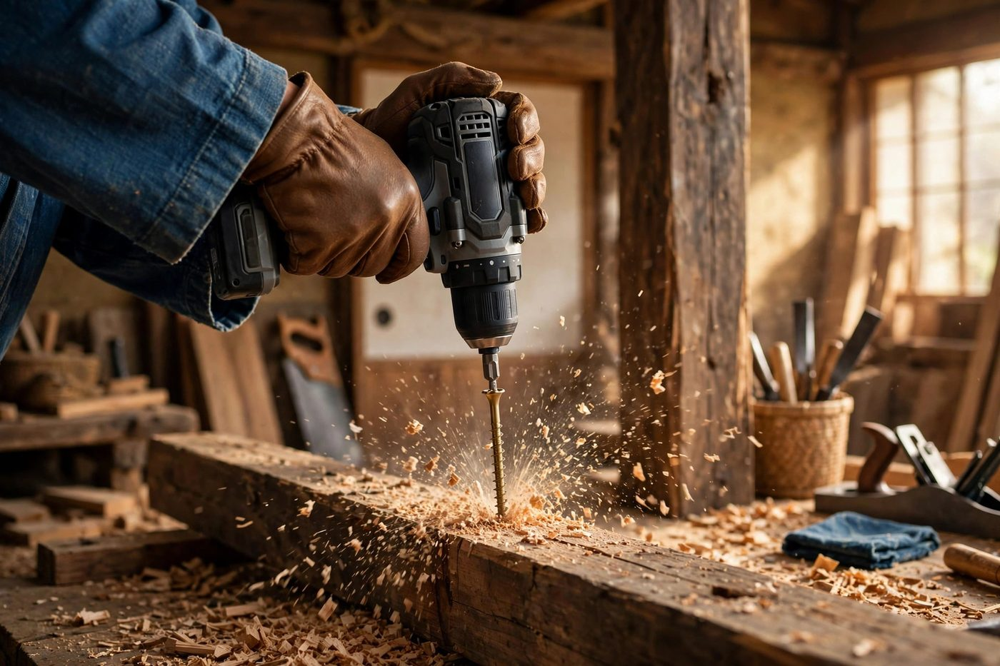
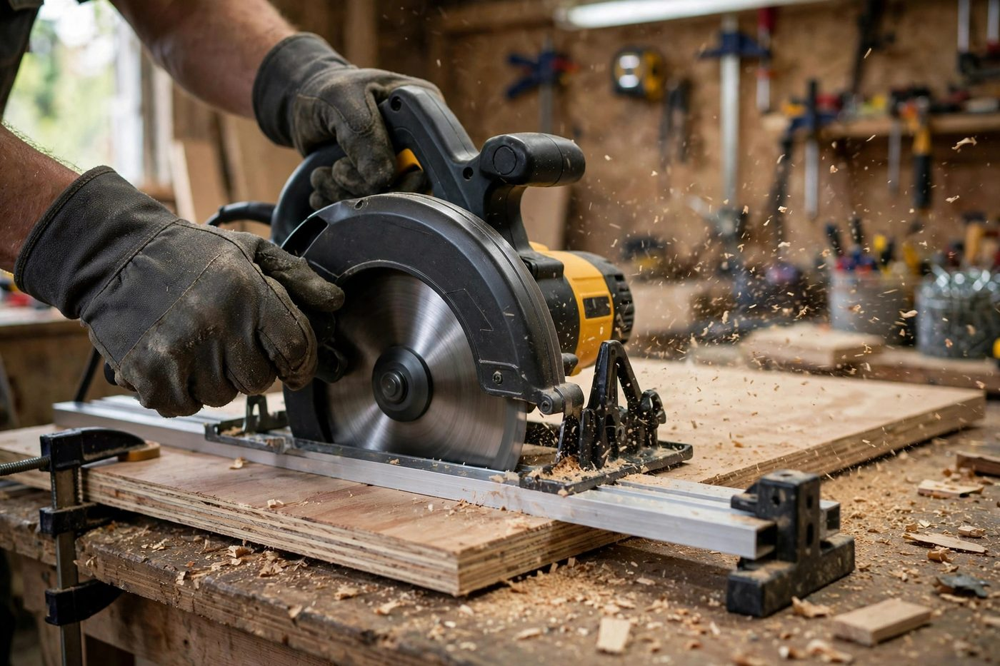
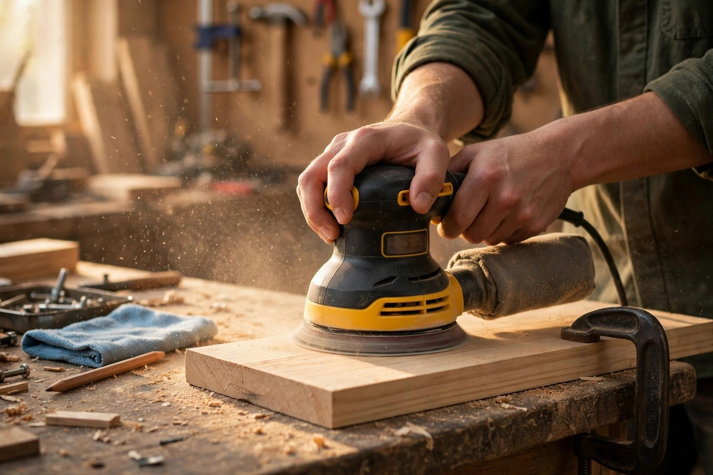
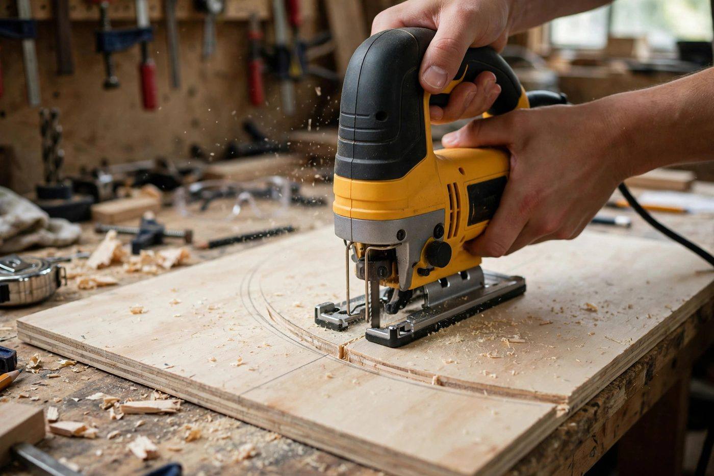

古民家暮らしで出番の多い電動工具、最初の一台はどれ？

古民家に住み始めると、棚をつける、床を張る、建具を直すと、DIYの用事が次々に出てきます。電動工具を揃えたいけれど、最初から一式買うのは大変。この記事では、実際の出番の多さをもとに「最初の一台」と「次に揃えたいもの」を整理します。
最初の一台はインパクトドライバー
結論から言うと、最初の一台はインパクトドライバーです。理由は単純で、古民家DIYの作業の半分以上が「ビスを打つ・外す」だからです。
- 床の合板のビス止め、棚・フックの取り付けなど出番が圧倒的に多い
- ビットを替えれば穴あけもできる
- 古い家の固い木材でもビスが入っていく
ドリルドライバーと迷うところですが、長いビスを木材に打ち込む作業が多い古民家では、インパクトの方が向いています。

次に揃えたいもの（出番順）
丸ノコ
合板や木材のカット用。床材や棚板を扱い始めると手ノコでは時間がかかりすぎます。ガイド（定規）を併用するとまっすぐ切れます。

サンダー
木材の表面仕上げや、古い塗装・汚れ落としに。家具のリメイクや床の下処理で出番があります。

ジグソー
曲線切りや切り欠き加工用。配管まわりの切り欠きなど、丸ノコでできない形に対応できます。

この記事の工具
- インパクトドライバー（18Vクラス）
- 丸ノコ（165mmクラス）＋丸ノコガイド
- ランダムサンダー
- ジグソー
代表的なモデルはAmazonでも探せます（PR）


買う前に決めておくこと：バッテリーは1メーカーに統一
充電式の工具は、メーカーごとにバッテリーの規格が違います。あとから工具を買い足すことを考えると、最初の一台のメーカーでバッテリーを使い回せるのが経済的です。本体だけ（バッテリーなし）の安いモデルを買い足していけるのも、統一の大きな利点です。
- 電圧は18Vクラスが力と取り回しのバランスがよい
- バッテリーは最低2個あると作業が止まらない
- 庭仕事の電動工具（草刈機など）も同じメーカーにするとさらに使い回せる
まとめ
- 最初の一台はインパクトドライバー（ビス作業が圧倒的に多い）
- 次点は丸ノコ→サンダー→ジグソーの順
- バッテリーのメーカー統一が、長い目で見て一番の節約
関連記事：古民家の台所の床をDIYで張り替えた話では、インパクトドライバーと丸ノコを使った実際の作業手順を紹介しています。